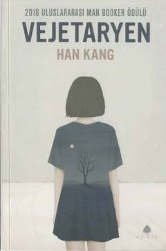

VGo'sht iste'mol qilishdan voz kechgan ayolning hayotini o'zgartiruvchi ruhiy va ijtimoiy kurashi.
Ushbu roman o'z hayotini tubdan o'zgartirishga qaror qilgan va go'sht iste'mol qilishdan voz kechgan ayolning murakkab ruhiy kechinmalari haqida hikoya qiladi. Asar inson erkinligi, jamiyat bosimi va oilaviy munosabatlarning chuqur tahlilini o'z ichiga oladi. Xalqaro Man Booker mukofotiga sazovor bo'lgan ushbu kitob zamonaviy koreys adabiyotining eng muhim asarlaridan biri hisoblanadi.